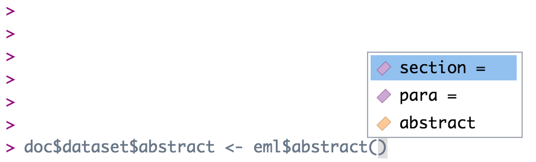

doc$dataset$title <- "New Title"Edit an EML element
There are multiple ways to edit an EML element.
Edit EML with strings
The most basic way to edit an EML element would be to navigate to the element and replace it with something else. Easy!
For example, to change the title one could use the following command:
If the element you are editing allows for multiple values, you can pass it a list of character strings. Since a dataset can have multiple titles, we can do this:
doc$dataset$title <- list("New Title", "Second New Title")However, this isn’t always the best method to edit the EML, particularly if the element has sub-elements.
Edit EML with the “EML” package
To edit a section where you are not 100% sure of the sub-elements, using the eml$elementName() helper functions from the EML package will pre-populate the options for you if you utilize the RStudio autocomplete functionality. The arguments in these functions show the available slots for any given EML element. For example, typing doc$dataset$abstract <- eml$abstract()<TAB> will show you that the abstract element can take either the section or para sub-elements.



doc$dataset$abstract <- eml$abstract(para = "A concise but thorough description of the who, what, where, when, why, and how of a dataset.")This inserts the abstract with a para element in our dataset, which we know from the EML schema is valid.
Note that the above is equivalent to the following generic construction:
doc$dataset$abstract <- list(para = "A concise but thorough description of the who, what, where, when, why, and how of a dataset.")The eml() family of functions provides the sub-elements as arguments, which is extremely helpful, but functionally all it is doing is creating a named list, which you can also do using the list function.
Edit EML with objects
A final way to edit an EML element would be to build a new object to replace the old object. To begin, you might create an object using an eml helper function. Let’s take keywords as an example. Sometimes keyword lists in a metadata record will come from different thesauruses, which you can then add in series (similar to the way we added multiple titles) to the element keywordSet.
We start by creating our first set of keywords and saving it to an object.
kw_list_1 <- eml$keywordSet(keywordThesaurus = "LTER controlled vocabulary",
keyword = list("bacteria", "carnivorous plants", "genetics", "thresholds"))Which returns:
$keyword
$keyword[[1]]
[1] "bacteria"
$keyword[[2]]
[1] "carnivorous plants"
$keyword[[3]]
[1] "genetics"
$keyword[[4]]
[1] "thresholds"
$keywordThesaurus
[1] "LTER controlled vocabulary"We create the second keyword list similarly:
kw_list_2 <- eml$keywordSet(keywordThesaurus = "LTER core area",
keyword = list("populations", "inorganic nutrients", "disturbance"))Finally, we can insert our two keyword lists into our EML document just like we did with the title example above, but rather than passing character strings into list(), we will pass our two keyword set objects.
doc$dataset$keywordSet <- list(kw_list_1, kw_list_2)
Note
Note that you must use the function list here and not the c() function. The reasons for this are complex, and due to some technical subtlety in R - but the gist of the issue is that the c() function can behave in unexpected ways with nested lists, and frequently will collapse the nesting into a single level, resulting in invalid EML.